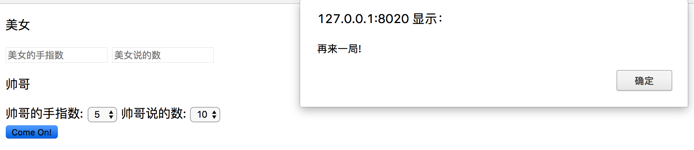

1.回顾今天练习还有笔记，记忆数组操作方法。 2.把昨天作业的前三题完成。 ----试一试吧---- 3.模拟十五二十猜拳游戏 游戏规则：每人两只手,两个人加起来最多是20,双方每次出0 (双手握拳伸出为0),5(一手握拳一手伸直为5),10(双手伸直为10)这三种数字,同时报一个数，如果双方出的加起来等于自己报的数字，自己就赢。 注： 1、美女的手指数和说的数随机产生 2、帅哥的手指数和说的数可以自由选择 3、手指数的范围为：0，5，10 4、说的数的范围为：0，5，10，15，20 要求： 1、对照设计图，进行网页布局 2、点击'come on'按钮进行游戏判断,弹窗显示结果（没有输赢再来一局/帅哥赢/美女赢） 图例： 